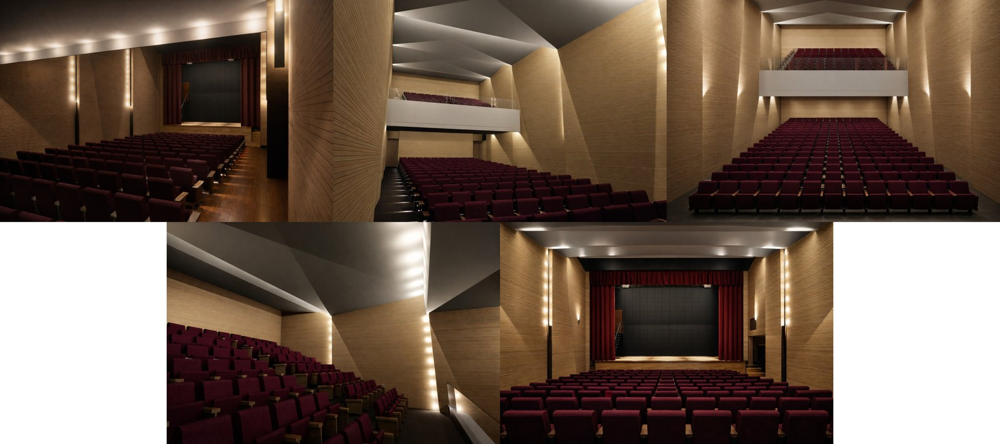
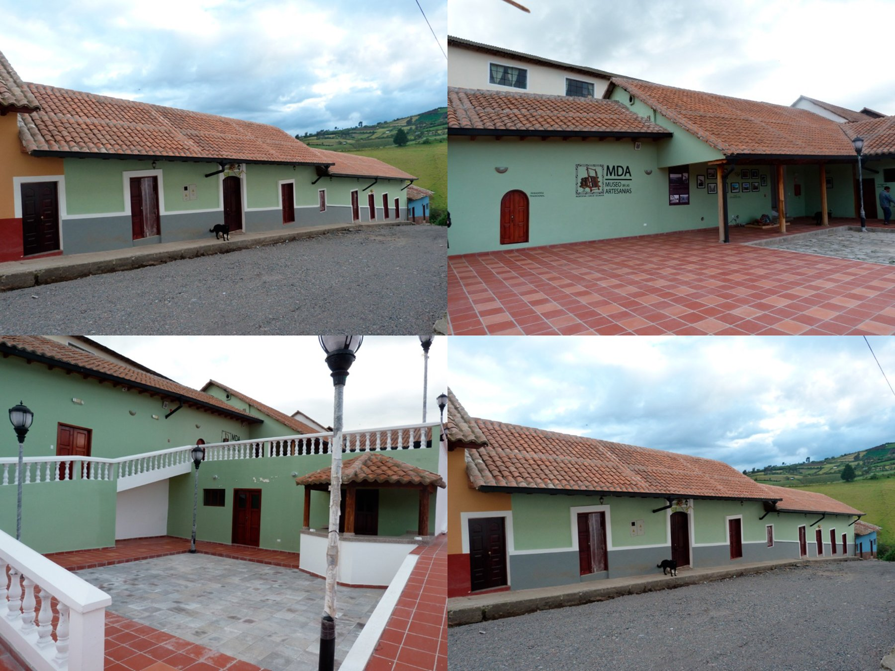
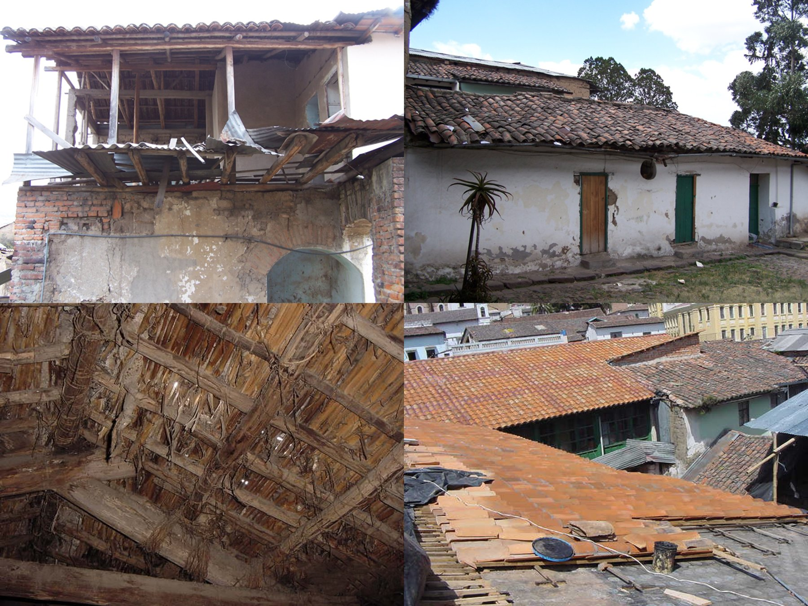

Teatro Colegio José Julián Andrade
📍 San Gabriel – Carchi, Ecuador
Estado:
Consultoría de Diseño Arquitectónico e Ingenierías
Año:
2018
Este proyecto se enfocó en elaborar una propuesta arquitectónica y de ingenierías completa, abarcando todos los detalles para rehabilitar este teatro a nivel formal. Por ser un espacio de poco más de 400 m², se optó por mejorar con materialidad, calidad de mobiliario y equipamiento básico como tramoyas, para que fuera la base de una puesta en marcha y diversificar sus usos tanto para el colegio como para la ciudad.


Museo de las Artesanías
📍 San Gabriel - Carchi, Ecuador
Estado:
Restauración y Rehabilitación Patrimonial
Año:
2015
Intervención de 2 casas patrimoniales que abarcan 330 m², las cuales se unen para formar el Museo de las Artesanías, integrando espacios de exposición y áreas para eventos.


Proyecto Recoleta
📍 Centro Histórico de Quito - Ecuador
Estado:
Diseño Arquitectónico - Intervención Patrimonial
Año:
2010
Intervención en inmueble patrimonial ubicado en el centro histórico de Quito, adaptando el espacio a nuevas unidades habitacionales sin perder su esencia.
